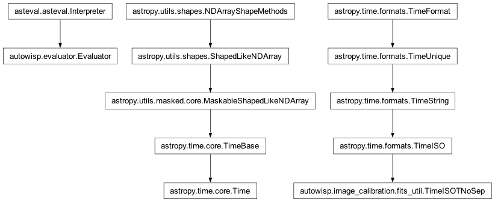
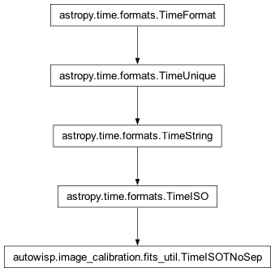

autowisp.image_calibration.fits_util module
Class Inheritance Diagram

Define a generic function to make 3-hdu FITS images (image, error, mask).
- class autowisp.image_calibration.fits_util.TimeISOTNoSep(val1, val2, scale, precision, in_subfmt, out_subfmt, from_jd=False)[source]
Bases:
TimeISO
A class to parse ISO times without any separators.
- fast_parser_pars = {'break_allowed': (0, 0, 0, 0, 0, 0, 0), 'delims': (0, 0, 0, 84, 0, 0, 0, 0), 'has_day_of_year': 0, 'starts': (0, 4, 6, 8, 11, 13, 15), 'stops': (3, 5, 7, 10, 12, 14, -1)}
- name = 'isotnosep'
- subfmts = (('date_hms', re.compile('(?P<year>\\d\\d\\d\\d)(?P<mon>\\d{1,2})(?P<mday>\\d{1,2})T(?P<hour>\\d{1,2})(?P<min>\\d{1,2})(?P<sec>\\d{1,2})$'), '{year:d}{mon:02d}{day:02d}T{hour:02d}{min:02d}{sec:02d}'), ('date_hm', re.compile('(?P<year>\\d\\d\\d\\d)(?P<mon>\\d{1,2})(?P<mday>\\d{1,2})T(?P<hour>\\d{1,2})(?P<min>\\d{1,2})$'), '{year:d}{mon:02d}{day:02d}T{hour:02d}{min:02d}'), ('date', re.compile('(?P<year>\\d\\d\\d\\d)-(?P<mon>\\d{1,2})-(?P<mday>\\d{1,2})$'), '{year:d}{mon:02d}{day:02d}'))
- autowisp.image_calibration.fits_util.add_channel_keywords(header, channel_name, channel_slice)[source]
Add the extra keywords describing channel to header.
- autowisp.image_calibration.fits_util.add_required_keywords(header, calibration_params, for_eval=False)[source]
Add keywords required by the pipeline to the given header.
- autowisp.image_calibration.fits_util.assemble_channels(filename, hdu, split_channels)[source]
Assemble the channels in the pattern they have in raw frames.
- Parameters:
filename (str or dict) – Either a single filename (if each channel is stored in a different HDU or if there is only one channel or if channels have not been split yet) or a dictionary indexed by channel name (if different channels are in different files).
hdu (int or dict or
'components'or'masks') –A single HDU index if channels are in separate files or there is only one channel or the channels have not been split yet.
dictionary indexed by channel (if channels are in seprate HDUs of the same file).
The string
'components'if assembling a assembling files with image, error, and mask HDUs
split_channels (dict) – See same name attribute of
Calibrator.
- Returns:
One or three numpy arrays constructed by staggering the individual channels as they were in the raw image. If hdu is
'components', the input image is assumed already to be trimmed to the image area.
- autowisp.image_calibration.fits_util.create_result(image_list, header, result_fname, compress, *, split_channels=False, allow_overwrite=False, **fname_substitutions)[source]
Create a 3-extension FITS file out of 3 numpy images and header.
All FITS files produced during calibration (calibrated frames and masters) contain 3 header data units:
the actual image and header,
an error estimate
a bad pixel mask.
Which one is which is identified by the IMAGETYP keyword in the corresponding header. The image HDU can have an arbitrary IMAGETYP, while the mask and error HDU have ‘IMAGETYP’=’mask’ and ‘IMAGETYP’=’error’ respectively.
- Parameters:
image_list – A list with 3 entries of image data for the output file. Namely, the calibrated image, an estimate of the error and a mask image. The images are saved as extensions in this same order.
header – The header to use for the the primary (calibrated) image.
result_fname – See Calibrator.__call__.
compress – Should the created image be compressed? If the value converts to True, compression is enabled and this parameter specifies the quantization level of the compression.
allow_overwrite – If a file named result_fname already exists, should it be overwritten (otherwise throw an exception).
fname_substitutions – Any parameters in addition to header entries required to generate the output filename.
- Returns:
None